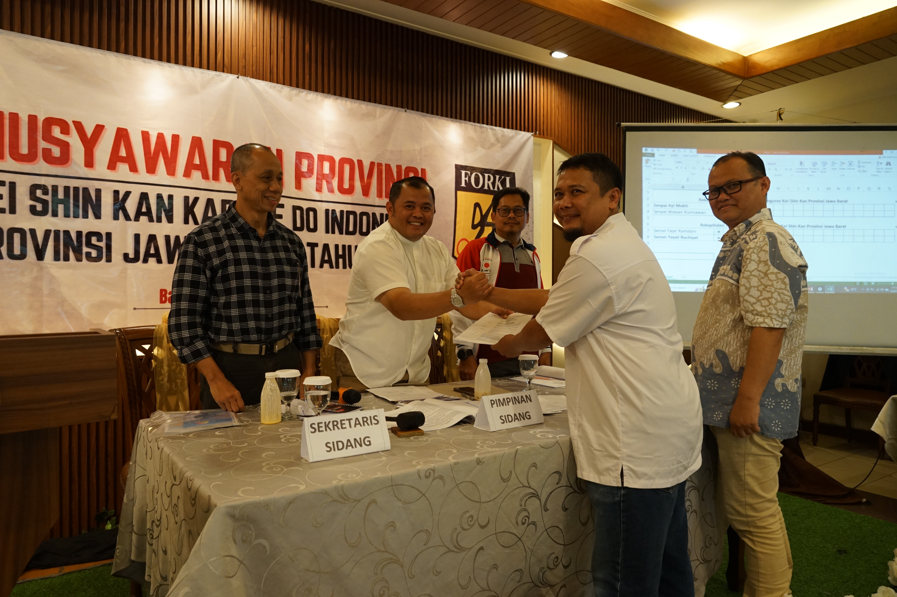

KEI SHIN KAN Jawa Barat adalah bagian integral dari organisasi bela diri Karate-Do yang berdedikasi untuk mengembangkan potensi diri, kedisiplinan, dan sportivitas di kalangan generasi muda dan masyarakat luas. Berdiri sejak tahun 19xx, kami telah mencetak banyak atlet berprestasi dan individu yang memiliki karakter kuat serta mental baja.
Filosofi KEI SHIN KAN menekankan pada keseimbangan antara kekuatan fisik dan ketenangan batin, melatih tidak hanya tubuh tetapi juga pikiran. Kami berkomitmen untuk menyediakan lingkungan latihan yang kondusif, didukung oleh para pelatih berpengalaman dan program latihan yang terstruktur.
Bergabunglah bersama kami untuk merasakan manfaat dari latihan Karate-Do, mulai dari peningkatan kebugaran fisik, kemampuan bela diri, hingga pembentukan karakter yang positif dan kepercayaan diri. KEI SHIN KAN Jawa Barat: Membentuk Jiwa Ksatria, Meraih Prestasi!